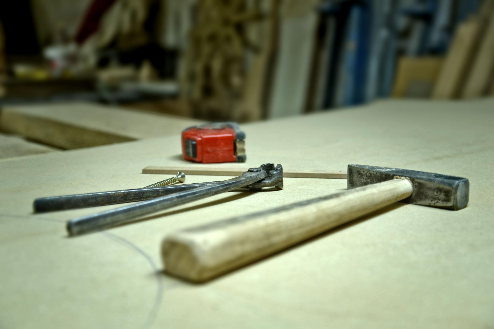
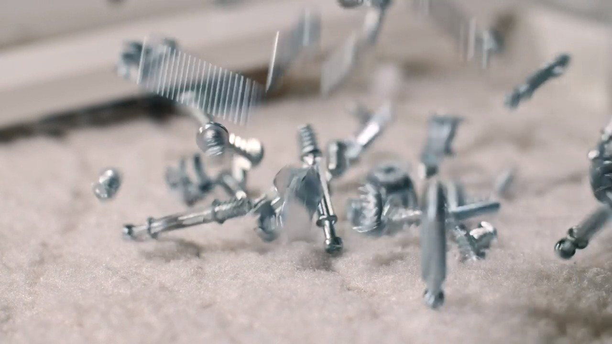
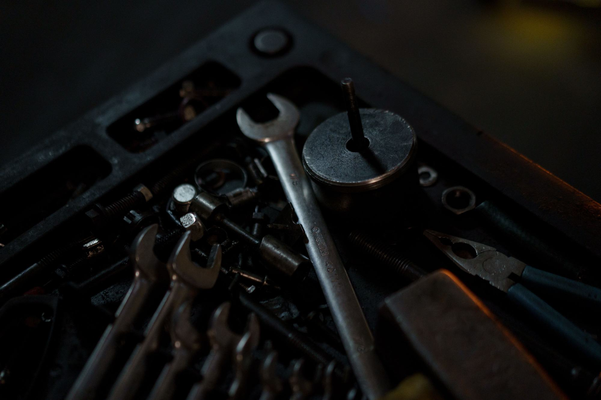
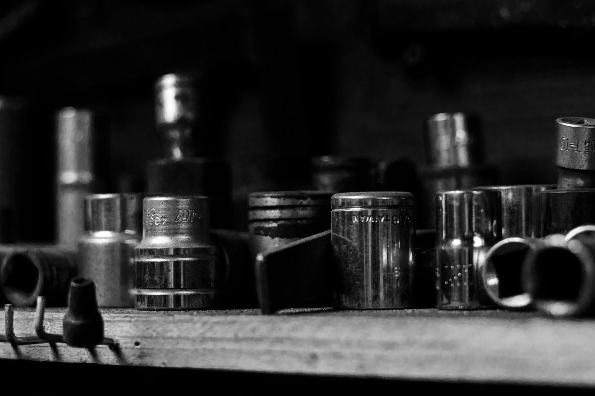
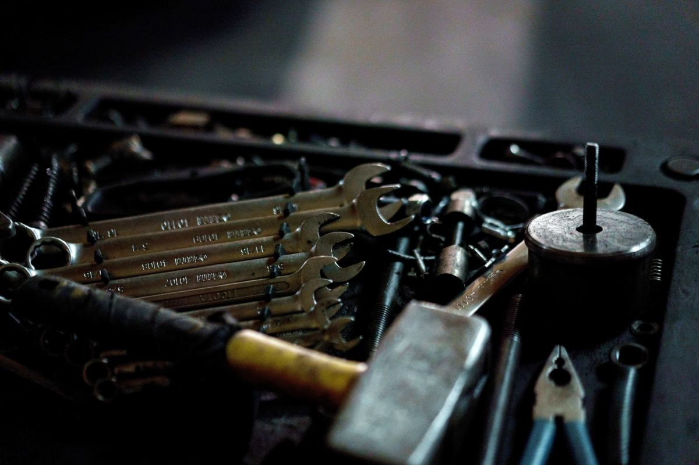
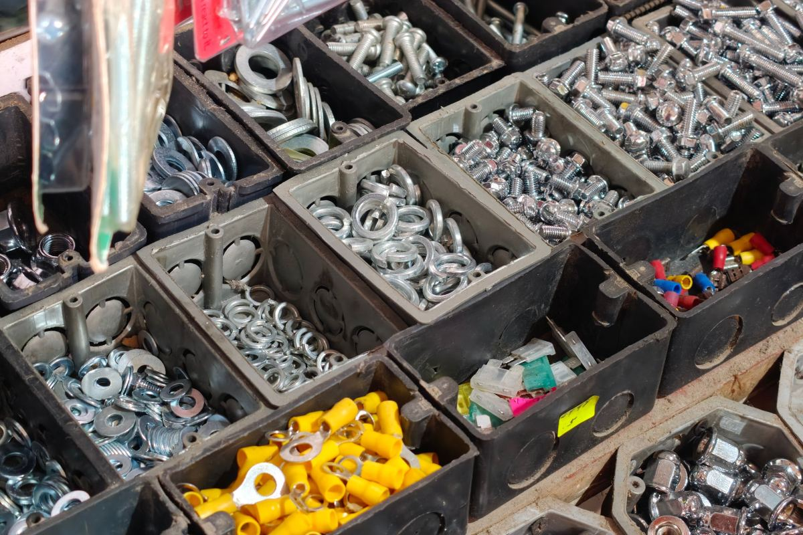
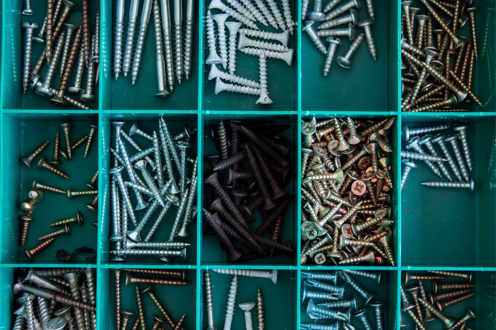
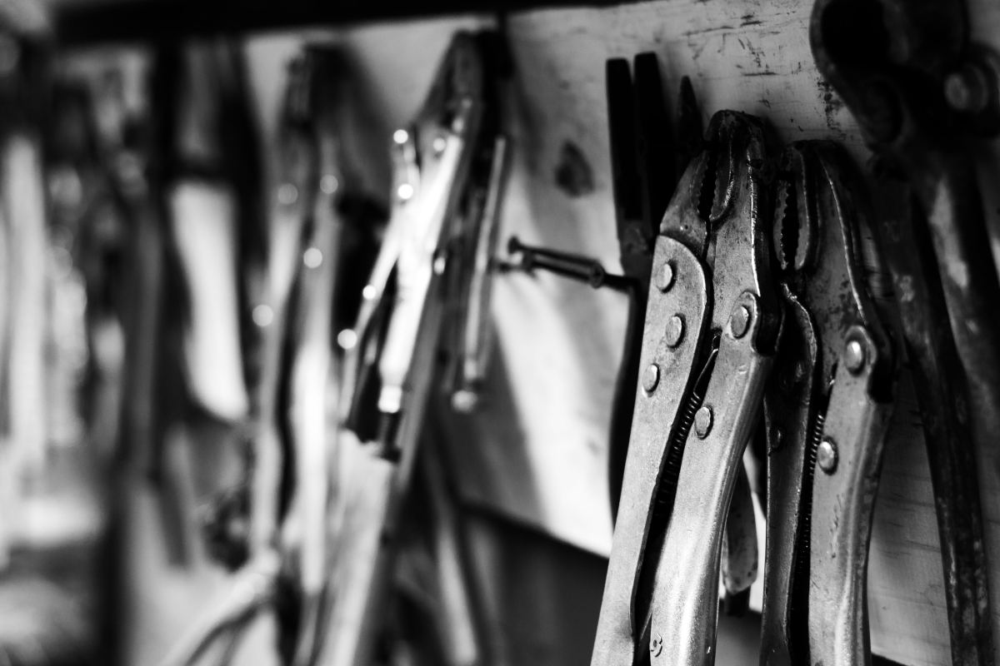
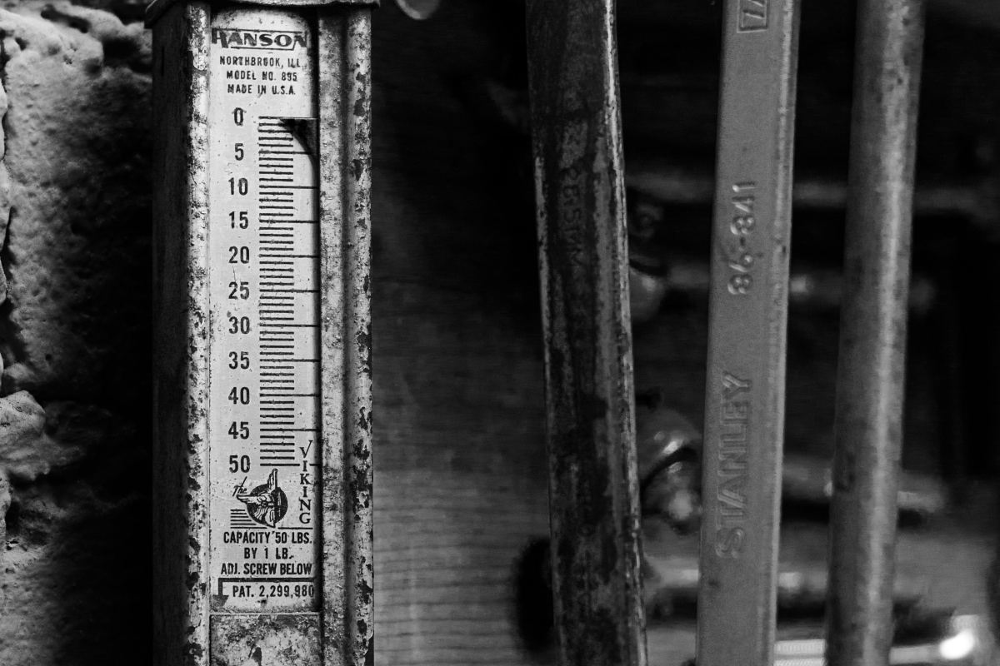

Ferretería · Puente Alto
Venga con la lista hecha.
Seis pegas de casa con todo lo que hay que comprar, escrito. 723 reseñas en Google y ninguna página donde ver esto antes de salir.
- 723reseñas en Google
- 6pegas con lista escrita
- 8familias en el local
- 0páginas donde verlo hoy
La pregunta de siempre
Qué tengo que llevar
para hacer esto.
Seis pegas de casa y lo que hay que comprar para cada una. Marque la suya y se arma el mensaje para encargarla o para venir con la lista lista. Son listas de compra, no instrucciones.
-
Colgar un cuadro
- Tarugos plásticos del 6
- Tornillos de 6 × 40
- Broca de widia del 6
- Ganchos de cuadro
- Nivel corto
-
Sellar una ventana
- Silicona neutra para exterior
- Pistola de silicona
- Espátula chica
- Alcohol y paño para limpiar
- Cinta de enmascarar
-
Pintar una pieza
- Látex para muro, según metros
- Rodillo, bandeja y extensión
- Brocha de 2 pulgadas
- Cinta de enmascarar y plástico
- Pasta muro y lija
-
Instalar una repisa
- Escuadras del largo de la tabla
- Tarugos y tornillos según muro
- Broca según tarugo
- Nivel y huincha
- Lápiz de carpintero
-
Arreglar una llave que gotea
- Juego de gomas y o-rings
- Teflón
- Llave francesa chica
- Destornillador plano y philips
-
Armar un cierre de patio
- Malla o tabla, según los metros
- Postes y hormigón de fraguado rápido
- Grapas o tornillos galvanizados
- Alambre y tensor
- Nivel de manguera
Mensaje: Marque una pega y acá aparece la lista para mandarla.
Las listas son un ejemplo: las cantidades y las medidas dependen del muro, del metraje y de lo que haya en el local. Sin precios.

Lo que falta en mitad de la pega es siempre lo más barato de la lista.
Qué hay
Ocho familias, no un catálogo infinito.
Lo que se encuentra en el local, agrupado como está en la estantería. Si algo no está, se encarga.
Herramienta manual
Martillos, alicates, llaves, destornilladores, huinchas.
Herramienta eléctrica
Taladros, esmeriles, lijadoras y sus repuestos.
Fijaciones
Tornillos, tarugos, pernos, clavos y grapas, por medida.
Pintura
Látex, esmalte, brochas, rodillos, pasta muro y lijas.
Gasfitería
Cañería, fitting, gomas, teflón y llaves de paso.
Terminaciones
Siliconas, adhesivos, molduras y cerraduras.
Maderas y tableros
Tabla, terciado y OSB en las medidas de siempre.
Seguridad
Guantes, antiparras, mascarillas y rodilleras.
Las ocho familias y lo que hay en cada una son un ejemplo hasta que la ferretería confirme su surtido.

Un tornillo del largo equivocado es un viaje más. Por eso se venden por medida y no por bolsa.
Para el que trabaja con esto
El maestro no compra igual.
Quien viene todos los días necesita otra cosa: encargar por teléfono, retirar sin hacer la fila y llevar la boleta al día.
-
Encargo por teléfono
Se deja el pedido armado y se retira listo.
Mismo día
-
Despacho a la obra
Para lo pesado: arena, cemento, tableros.
Puente Alto y alrededores
-
Cuenta corriente
Para el que compra todas las semanas.
Con convenio
-
Documento tributario
Boleta o factura al momento de retirar.
Se pide al comprar

Se atiende por el mesón, no por un pasillo.
Usted dice qué va a hacer y del otro lado alguien sabe qué falta. Eso es lo que una cadena no tiene y no aparece en ninguna búsqueda de Google.
Cómo se atiende exactamente lo confirma la ferretería. Ejemplo
El estante de fierro.
Fotos del rubro, no del local: cuando la ferretería nos pase las suyas, se cambian todas.






Escribir
Puente Alto, a la vuelta de la obra.
Lo más rápido es llamar con la lista a mano. El número es el que aparece en su ficha de Google.
- Teléfono
- (2) 2874 3926
- Comuna
- Puente Alto, Santiago
- Dirección
- Falta: la confirma la ferretería
- Horario
- Lunes a sábado, 8:30 a 19:00
- Despacho
- Puente Alto y alrededores
- En Google
- 723 reseñas (27-08-2026)
Para el dueño
Qué es esto y qué no.
Qué es
Una propuesta de sitio web hecha por nuestra cuenta. La ferretería no la encargó ni la ha revisado. Dimos por cierto sólo lo público: las 723 reseñas en Google (27-08-2026) y el teléfono de la ficha.
Qué es ejemplo
Las seis listas, las ocho familias, los servicios para el maestro, el horario, el despacho y la dirección. Todo va marcado con línea punteada. No hay precios a propósito: los pone usted.
Por qué esta página
Quien busca «ferretería Puente Alto» hoy encuentra directorios y cadenas. Con 723 reseñas usted tiene lo más difícil; falta la página donde aterrizar. Ésta no carga nada de terceros y puede quedar publicada en un día.